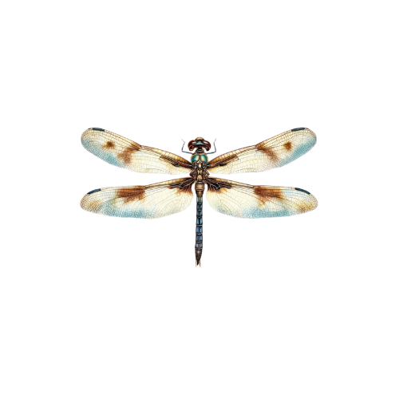

I'm a graphic design student who enjoys exploring the spaces between old and new like mixing vintage charm with modern colors, layouts, and ideas. I'm drawn to projects that involve building a website, crafting a brand identity, or designing something for print. Typography is one of my favorite parts of the process. I love how letters alone can set a mood, tell a story, or shift the entire feel of a design. I'm always chasing that balance between structure and personality. Design matters to me because it's a world where diversity is not just accepted, but celebrated. Every mind works differently, and I love how no two outcomes are ever the same, even with the same tools or prompt. It's a reminder that creativity is alive, constantly changing, and will always be uniquely ours. I'm still figuring out exactly where I want to land in the design world, but I'm leaning toward work that feels meaningful and creatively fulfilling.
Projects